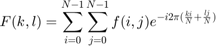
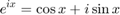
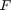
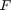
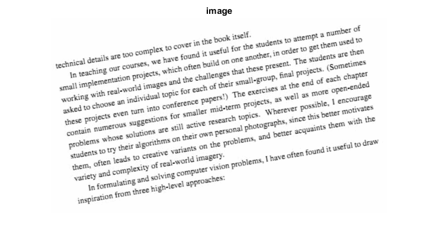
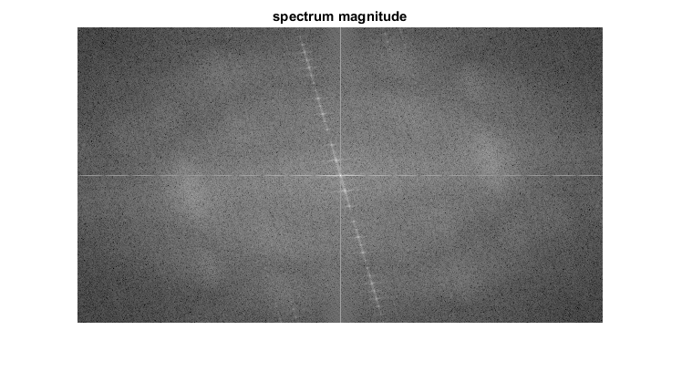

Discrete Fourier Transform
This program demonstrated the use of the discrete Fourier transform (DFT). The DFT of an image is taken and it's power spectrum is displayed.
In this sample, we we learn:
- What is a Fourier transform and why use it?
- Usage of OpenCV functions such as: cv.dft and cv.getOptimalDFTSize.
Sources:
- https://docs.opencv.org/3.2.0/d8/d01/tutorial_discrete_fourier_transform.html
- https://github.com/opencv/opencv/blob/3.2.0/samples/cpp/tutorial_code/core/discrete_fourier_transform/discrete_fourier_transform.cpp
- https://github.com/opencv/opencv/blob/3.2.0/samples/python/dft.py
- https://github.com/opencv/opencv/blob/3.2.0/samples/cpp/dft.cpp
Contents
Theory
The Fourier Transform will decompose an image into its sine and cosine components. In other words, it will transform an image from its spatial domain to its frequency domain. The idea is that any function may be approximated exactly with the sum of infinite sine and cosine functions. The Fourier Transform is a way how to do this. Mathematically a two dimensional images Fourier transform is:


Here  is the image value in its spatial domain and  in its frequency domain. The result of the transformation is complex numbers. Displaying this is possible either via a real image and a complex image or via a magnitude and a phase image. However, throughout the image processing algorithms only the magnitude image is interesting as this contains all the information we need about the images geometric structure. Nevertheless, if
you intend to make some modifications of the image in these forms and then you need to retransform it you'll need to preserve
both of these.
is the image value in its spatial domain and  in its frequency domain. The result of the transformation is complex numbers. Displaying this is possible either via a real image and a complex image or via a magnitude and a phase image. However, throughout the image processing algorithms only the magnitude image is interesting as this contains all the information we need about the images geometric structure. Nevertheless, if
you intend to make some modifications of the image in these forms and then you need to retransform it you'll need to preserve
both of these.
Code
In this sample we'll show how to calculate and show the magnitude image of a Fourier Transform. In case of digital images are discrete. This means they may take up a value from a given domain
value. For example in a basic gray scale image values usually are between 0 and 255. Therefore the Fourier Transform too needs
to be of a discrete type resulting in a Discrete Fourier Transform (DFT). You'll want to use this whenever you need to determine the structure of an image from a geometrical point of view. Here
are the steps to follow (in case of a gray scale input image  ):
):
fname = fullfile(mexopencv.root(), 'test', 'imageTextR.png'); if exist(fname, 'file') ~= 2 disp('Downloading image...') url = 'https://cdn.rawgit.com/opencv/opencv/3.2.0/samples/data/imageTextR.png'; urlwrite(url, fname); end I = cv.imread(fname, 'Grayscale',true); imshow(I), title('image')
1. Expand the image to an optimal size
The performance of a DFT is dependent of the image size. It tends to be the fastest for image sizes that are multiple of the numbers two, three and five. Therefore, to achieve maximal performance it is generally a good idea to pad border values to the image to get a size with such traits. The cv.getOptimalDFTSize returns this optimal size and we can use the cv.copyMakeBorder function to expand the borders of an image. The appended pixels are initialized with zero.
sz = [size(I,1) size(I,2)]; dsz(1) = cv.getOptimalDFTSize(sz(1)); dsz(2) = cv.getOptimalDFTSize(sz(2)); padded = cv.copyMakeBorder(I, [0 dsz(1)-sz(1) 0 dsz(2)-sz(2)], ... 'BorderType','Constant', 'Value',0);
2. Make place for both the complex and the real values
The result of a Fourier Transform is complex. This implies that for each image value the result is two image values (one per component). Moreover, the frequency domains range is much larger than its spatial counterpart. Therefore, we store these usually at least in a float format. Therefore we'll convert our input image to this type and expand it with another channel to hold the complex values:
padded = single(padded); padded(:,:,2) = 0;
2. Make the Discrete Fourier Transform
if true complexI = cv.dft(padded); else complexI = cv.dft(padded, 'ComplexOutput',true, 'NonzeroRows',sz(1)); end
3. Transform the real and complex values to magnitude
A complex number has a real and an imaginary part. The results of a DFT are complex numbers. The magnitude of a DFT is:
magI = cv.magnitude(complexI(:,:,1), complexI(:,:,2));
4. Switch to a logarithmic scale
It turns out that the dynamic range of the Fourier coefficients is too large to be displayed on the screen. We have some small and some high changing values that we can't observe like this. Therefore the high values will all turn out as white points, while the small ones as black. To use the gray scale values to for visualization we can transform our linear scale to a logarithmic one:
magI = log(magI + 1);
5. Crop and rearrange
Remember, that at the first step, we expanded the image? Well, it's time to throw away the newly introduced values. For visualization purposes we may also rearrange the quadrants of the result, so that the origin (0,0) corresponds with the image center.
% crop the spectrum, to ensure it has an even number of rows or columns magI = magI(1:end-double(rem(end,2)==1), 1:end-double(rem(end,2)==1)); % the four quadrant qTL = magI(1:end/2, 1:end/2); % top-left qTR = magI(1:end/2, end/2+1:end); % top-right qBL = magI(end/2+1:end, 1:end/2); % bottom-left qBR = magI(end/2+1:end, end/2+1:end); % bottom-right % swap quadrants diagonally magI = [qBR qBL; qTR qTL];
6. Normalize
This is done again for visualization purposes. We now have the magnitudes, however this are still out of our image display range of zero to one. We normalize our values to this range using the cv.normalize function.
% Transform the matrix with float values into a viewable image form % (float between values 0 and 1). magI = cv.normalize(magI, 'Alpha',0, 'Beta',1, 'NormType','MinMax');
Result
An application idea would be to determine the geometrical orientation present in the image. For example, let us find out if a text is horizontal or not? Looking at some text you'll notice that the text lines sort of form also horizontal lines and the letters form sort of vertical lines. These two main components of a text snippet may be also seen in case of the Fourier transform. Let us use this horizontal and this rotated image about a text.
In case of the horizontal text:

In case of a rotated text:

You can see that the most influential components of the frequency domain (brightest dots on the magnitude image) follow the geometric rotation of objects on the image. From this we may calculate the offset and perform an image rotation to correct eventual miss alignments.
imshow(magI), title('spectrum magnitude')